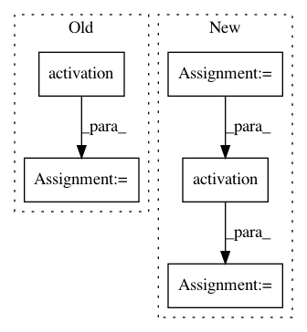

47ed18a3af8be20dce91286a331d4671074ee0ca,keras/layers/core.py,TimeDistributedDense,get_output,#TimeDistributedDense#Any#,783
Before Change
def get_output(self, train=False):
X = self.get_input(train)
output = self.activation(K.dot(K.permute_dimensions(X, (1, 0, 2)),
self.W) + self.b)
return K.permute_dimensions(output, (1, 0, 2))
def get_config(self):
config = {"name": self.__class__.__name__,
After Change
last_output, outputs, states = K.rnn(step, X, [], masking=False)
outputs = self.activation(outputs)
return outputs
def get_config(self):
config = {"name": self.__class__.__name__,
In pattern: SUPERPATTERN
Frequency: 3
Non-data size: 5
Instances
Project Name: keras-team/keras
Commit Name: 47ed18a3af8be20dce91286a331d4671074ee0ca
Time: 2015-11-26
Author: francois.chollet@gmail.com
File Name: keras/layers/core.py
Class Name: TimeDistributedDense
Method Name: get_output
Project Name: lcswillems/torch-rl
Commit Name: 2bb01e838a2f39b041b7417670694e014d3f9b2f
Time: 2018-04-11
Author: lcswillems@gmail.com
File Name: models/critic.py
Class Name: Value
Method Name: forward
Project Name: pcyin/tranX
Commit Name: 279a9b63c77b6748dfb8ebdd0137974ca1fee442
Time: 2018-11-12
Author: pcyin@cs.cmu.edu
File Name: model/nn_utils.py
Class Name: MLP
Method Name: forward